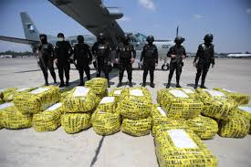
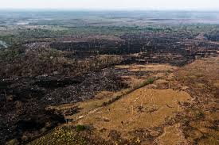

El departamento de Petén, ubicado en el norte de Guatemala, ha sido durante muchos años una región clave en la lucha contra el narcotráfico. Su geografía extensa y de difícil acceso, con vastas áreas de selva tropical, lo convierte en un lugar estratégico para el tránsito de drogas que se desplazan desde Sudamérica hacia México y Estados Unidos. La presencia de rutas poco vigiladas y la limitada infraestructura de seguridad han hecho de esta zona un punto crítico para las operaciones de organizaciones criminales. Históricamente, Petén ha sido escenario de actividades ilícitas relacionadas con el narcotráfico, incluyendo el uso de pistas de aterrizaje clandestinas, tráfico de personas y el establecimiento de laboratorios para la producción de drogas sintéticas. Estas actividades no solo impactan la seguridad del departamento, sino que también tienen efectos devastadores en el medio ambiente y la estabilidad social de las comunidades locales.
La ubicación geográfica de Petén lo convierte en un punto de tránsito ideal para los carteles de la droga. Limita con México al norte y Belice al este, lo que facilita el cruce de fronteras a través de rutas terrestres y fluviales. La densa selva y la falta de caminos pavimentados permiten a los narcotraficantes moverse sin ser detectados por las fuerzas de seguridad locales. Además, la zona cuenta con múltiples pistas de aterrizaje clandestinas en medio de la selva, utilizadas para descargar cargamentos de drogas desde aviones ligeros provenientes de Colombia y Venezuela. Estas rutas no solo facilitan el transporte de drogas, sino que también permiten el tránsito de armas y otros bienes ilícitos. La conectividad con otras regiones de Guatemala y el fácil acceso a la frontera con México han convertido a Petén en un territorio de alta competencia entre grupos criminales que buscan controlar las rutas hacia el norte.
El narcotráfico en Petén no solo ha afectado la seguridad, sino que también ha tenido consecuencias sociales y ambientales graves. Las comunidades locales, a menudo aisladas y con acceso limitado a recursos económicos y educativos, se han visto involucradas en estas actividades ilícitas, ya sea por coerción o por falta de alternativas laborales. Los grupos delictivos a menudo reclutan a jóvenes para actuar como vigías, guías o transportistas, creando un ciclo de pobreza y violencia del cual es difícil escapar. Las comunidades también enfrentan amenazas constantes, ya que la lucha por el control territorial entre organizaciones criminales genera un entorno de inseguridad. Las amenazas, extorsiones y violencia afectan no solo a las personas involucradas directamente, sino también a quienes tratan de resistirse a estas actividades o simplemente viven cerca de estas rutas de tráfico.
La Reserva de la Biosfera Maya, una de las áreas naturales protegidas más grandes de Centroamérica, ha sido uno de los principales afectados por las actividades del narcotráfico en Petén. Los narcotraficantes talan grandes áreas de bosque para construir pistas de aterrizaje y establecer campamentos. Esta deforestación no solo destruye hábitats de especies en peligro de extinción, sino que también facilita otras actividades ilegales como la minería y la caza furtiva. Los incendios forestales intencionales también son una táctica común para limpiar grandes extensiones de terreno, lo que lleva a la destrucción irreversible de ecosistemas delicados. A menudo, estos territorios se transforman en zonas de cultivo ilegal o se utilizan para actividades agrícolas que sirven de fachada para el blanqueo de dinero proveniente de las drogas.
El gobierno de Guatemala ha realizado esfuerzos para contrarrestar el narcotráfico en Petén, desplegando fuerzas militares y aumentando la vigilancia en áreas fronterizas. Sin embargo, la falta de recursos, la corrupción y la influencia de los grupos criminales dificultan estos esfuerzos. Además, la cooperación con países vecinos, como México y Belice, es fundamental, ya que las rutas del narcotráfico suelen cruzar varias fronteras en su trayecto hacia el norte. A pesar de los esfuerzos internacionales y de la presencia militar en algunas regiones, los narcotraficantes siguen encontrando maneras de evadir las operaciones de seguridad. El uso de tecnologías como drones y sistemas de comunicación avanzados les permite coordinar sus actividades y evitar los puntos de control establecidos por las autoridades.
Petén, la región más extensa y boscosa de Guatemala, ha sido durante mucho tiempo una zona de gran riqueza ecológica y biodiversidad. Sin embargo, en las últimas décadas, la deforestación ha alcanzado niveles alarmantes, poniendo en peligro tanto su flora y fauna como la sostenibilidad de las comunidades locales. La selva de Petén, que abarca parte de la Reserva de la Biosfera Maya, enfrenta amenazas constantes debido a la expansión agrícola, la ganadería, los incendios forestales y las actividades ilegales como el narcotráfico. Estas prácticas no solo destruyen vastas extensiones de bosque tropical, sino que también generan un impacto devastador en el ecosistema, alterando el equilibrio ambiental y poniendo en riesgo a muchas especies en peligro de extinción.
Expansión Agrícola y Ganadera: La conversión de áreas forestales en tierras de cultivo o pastizales para la cría de ganado es uno de los factores predominantes. Los pequeños agricultores a menudo talan áreas de bosque para cultivar maíz y frijol, mientras que los grandes terratenientes destruyen vastas extensiones para expandir la ganadería, una práctica que es impulsada por la creciente demanda de carne y productos agrícolas. Narcotráfico y Actividades Ilegales: El narcotráfico tiene un impacto directo en la deforestación de Petén. Las organizaciones criminales despejan grandes áreas de bosque para construir pistas de aterrizaje clandestinas, campamentos y rutas de contrabando. Además, utilizan tierras deforestadas para crear plantaciones que sirven de fachada para el blanqueo de dinero. Estas actividades, a menudo violentas, generan inseguridad en las comunidades locales y dificultan la implementación de políticas de conservación. Asentamientos Humanos y Urbanización: La población de Petén ha crecido significativamente en las últimas décadas, lo que ha llevado a un aumento de los asentamientos humanos en áreas forestales. La falta de planificación urbana y la expansión de comunidades en zonas rurales incrementan la presión sobre los recursos naturales, llevando a una mayor tala de árboles para la construcción de viviendas, caminos y otros proyectos de infraestructura. Explotación Maderera Ilegal: A pesar de las leyes que regulan la tala de árboles en áreas protegidas, la explotación maderera ilegal sigue siendo una práctica común en Petén. Especies valiosas como la caoba y el cedro son extraídas de manera clandestina, afectando la estructura de los bosques y dejando cicatrices profundas en el paisaje.
La deforestación en Petén tiene un efecto devastador sobre la biodiversidad local. La selva tropical alberga a miles de especies de plantas y animales, muchas de ellas endémicas y en peligro de extinción. La pérdida de hábitats naturales obliga a especies como el jaguar, el mono aullador y numerosas aves migratorias a desplazarse, lo que altera sus patrones de comportamiento y aumenta el riesgo de conflictos con comunidades humanas. Además, la destrucción de la cubierta forestal afecta el ciclo del agua, lo que a su vez provoca sequías y reduce la disponibilidad de agua para las comunidades y la agricultura. La deforestación también contribuye significativamente al cambio climático, ya que los bosques de Petén actúan como sumideros de carbono, almacenando grandes cantidades de CO₂ que son liberadas a la atmósfera cuando los árboles son talados o quemados.
Las comunidades locales que dependen del bosque para su subsistencia se ven gravemente afectadas por la deforestación. La pérdida de recursos como madera, plantas medicinales y fauna silvestre reduce las opciones de empleo y medios de vida para muchas personas. Además, el avance de la deforestación lleva a conflictos por la tierra, generando tensiones entre los habitantes locales y nuevos asentamientos que buscan ocupar áreas anteriormente forestadas. El impacto económico de la deforestación también es significativo. Aunque la agricultura y la ganadería generan ingresos a corto plazo, la destrucción del bosque disminuye la fertilidad del suelo y provoca la degradación de la tierra a largo plazo, lo que reduce su productividad y lleva a la pérdida de recursos económicos en el futuro.
